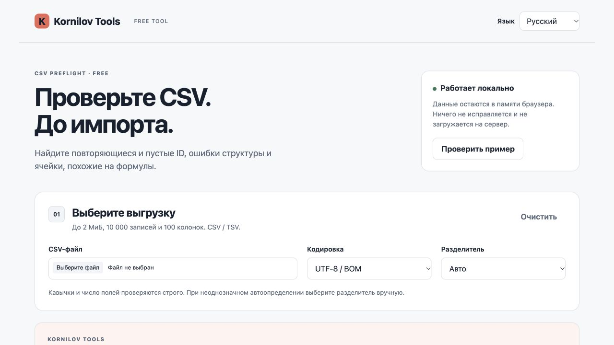

CSV Preflight
Check the CSV before you import it.
Find empty and duplicate IDs, structural issues and formula-like cells.
| Check | Result |
|---|---|
| Columns | 4 |
| Structure | Valid |
| Formula-like cells | 1 |
The file is unchanged. Review warnings before importing.
Demonstration only. Projects, people and numbers are fictional.
Who it is for
For anyone receiving exports from different systems who needs to inspect their structure first.
What you get
- CSV/TSV structure checks
- Empty and duplicate ID detection
- Formula-like markers and local preview
- JSON counts and coordinates report

How it works
Open the free web version here. To work offline, download the ZIP on Boosty, extract the folder and open index.html. The primary workflow is a desktop browser.
Get the ZIP on BoostyHow you can use it
Free personal and commercial internal use. Share your own reports with colleagues. Redistribution of the application follows the included license.
Full licenseFree access
The browser version is free: no purchase or subscription is required. Use the ZIP from the free Boosty post for offline work. Paid tools in the catalog are separate products.
Support and updates
Need help with the files or the tool? Message the creator on Boosty. Include the product, version and browser. A changelog is included in the ZIP; available versions are listed in the free post.